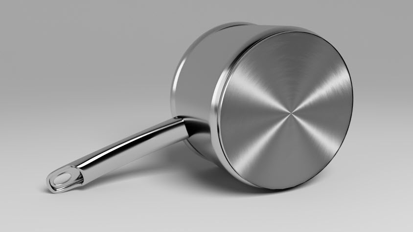
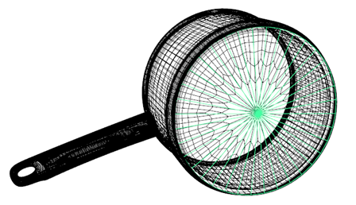
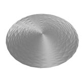
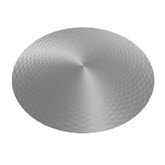
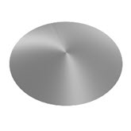
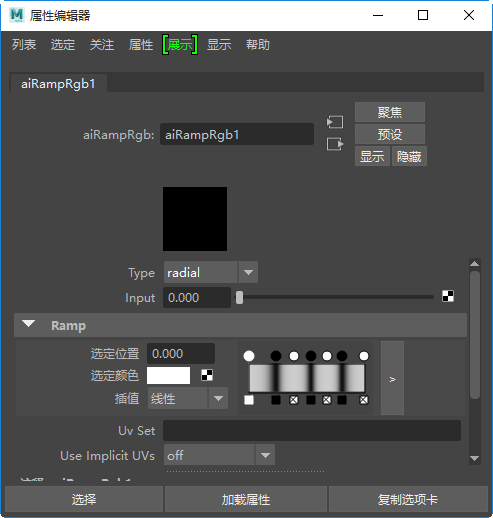
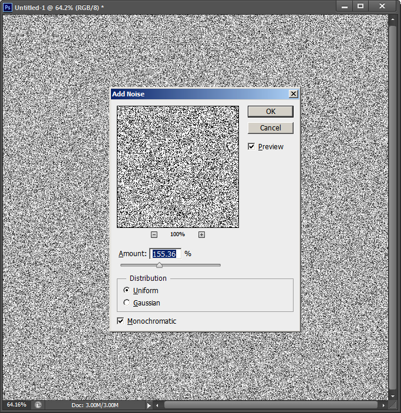
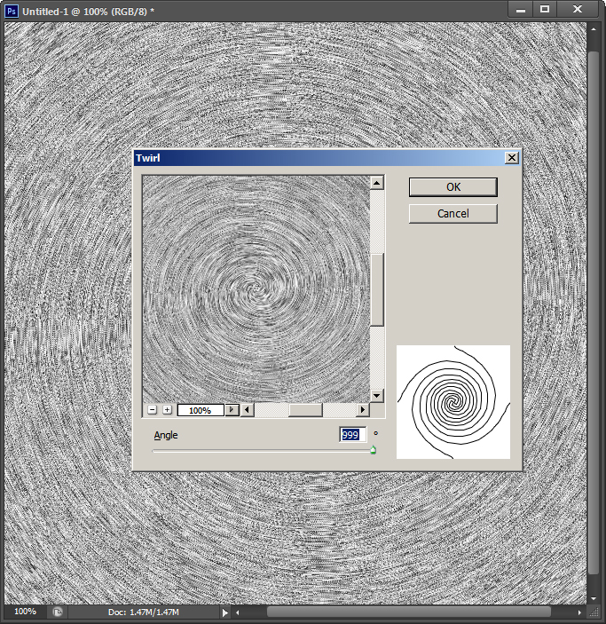
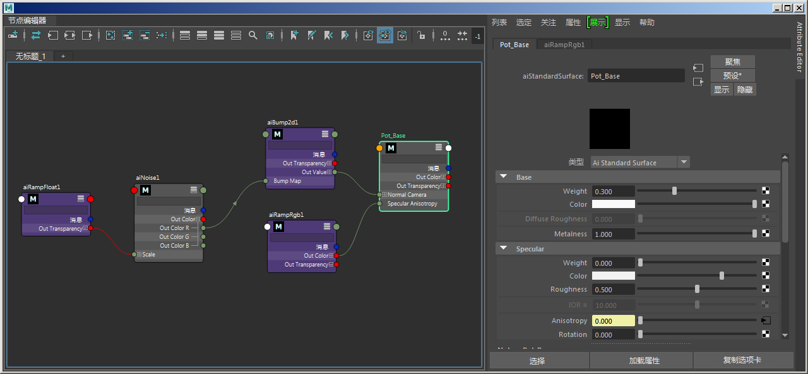

锅的底部呈现各向异性拉丝金属效果
本简短教程介绍了如何创建一个具有各向异性反射的逼真钢质着色器，并利用该着色器在锅的底部创建拉丝金属效果。各向异性反射取决于反射曲面上存在的细小凹槽（凹凸、纹理或划痕）的方向。我们将组合使用一个连接到各向异性的径向渐变和一个连接到凹凸贴图属性的噪波纹理来实现此效果。
要下载示例场景文件，请单击此处。

将 standand_surface 着色器指定给锅底
现在，我们要创建具有拉丝金属效果的钢质着色器。
您可能会注意到，使用各向异性时，镜面反射高光部分会出现分面现象。我们可以通过在网格的 Arnold 属性中启用 smooth_tangents 来删除面状外观。请注意，这至少要求多边形网格中有一次 subdivision_iteration。
|  |  |  |
| subdivision_iterations：无 | subdivision_iterations：1 | subdivision_iterations：1（启用 smooth_tangents） |
各向异性方向取决于当前使用的网格的 UV。
此时，在锅底应该能看到各向异性拉丝金属效果。但是，目前还缺少这种效果所具有的凹凸皱纹质感。

RampRGB -> standard_surface 的 specular_anisotropy
现在，我们需要创建一个刮擦效果，并将其连接到凹凸属性，以实现精细的拉丝金属效果。我们可以使用以下着色器来执行此操作：
渐变浮点 -> 噪波 -> bump2d (RampFloat -> Noise -> bump2d)
可以在 Photoshop 中创建一个刮擦贴图，并将其连接到凹凸属性，以实现精细的拉丝金属效果。
|  |  |
| Photoshop 中的“噪波”(Noise)过滤器 | Photoshop 中的“扭转”(Twirl)过滤器 |
有关如何创建各向异性拉丝金属着色器的简短教程到此结束。

最终的着色网络